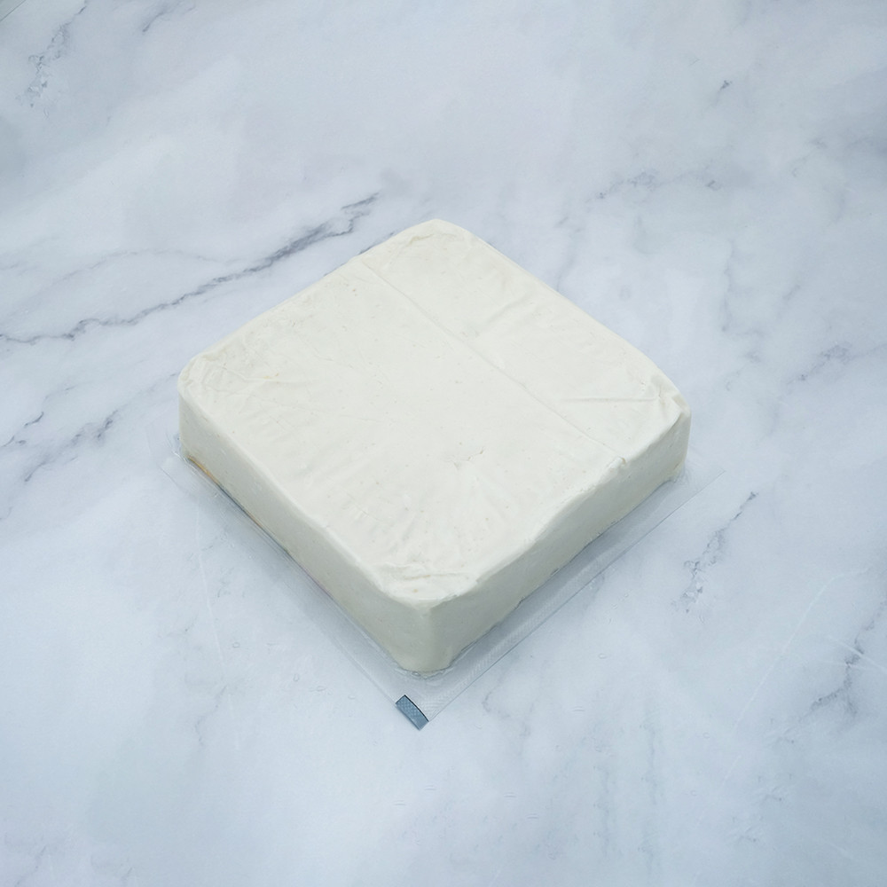

NL80 NY/PE thermoforming film used as a sealing film on continuous automatic vacuum thermoforming lines. Laminates with PET or OPP film to form a vacuum bag for chicken, ham, sausage, bacon, duck, meat, and seafood. Suggested forming depth 10–15mm.
F2624 is the 80μm grade in Intlpak's NL nylon/PE thermoforming film series, built for a 10–15mm forming depth — a step up from the thin F2646 sealing film toward true vacuum-forming applications. After lamination with PET or OPP film, it forms a robust vacuum bag capable of holding its shape through the forming, sealing, and shipping process.
The added gauge gives F2624 more body for shallow-to-moderate draw cavities while retaining the same high transparency, high gloss, and pinhole-resistant formability that defines the NL series — keeping vacuum-packed proteins looking clean and retail-ready.
F2624 is the 80μm, 10–15mm forming-depth grade in Intlpak's NL nylon/PE thermoforming film family. The table below shows F2624 alongside the other gauges in the same series.
| Property | Standard | Unit | F2646 (50μm) | F2624 (80μm) | F2615 (120μm) | F2613 (150μm) | F2647 (180μm) | F5309 (262μm) |
|---|---|---|---|---|---|---|---|---|
| Thickness | — | μm | 50 | 80 | 120 | 150 | 180 | 262 |
| Yield Point (MD) | ASTM D882 | kg/cm² | 150 | 150 | 130 | 180 | 160 | N/A |
| Yield Point (TD) | ASTM D882 | kg/cm² | 150 | 150 | 140 | 170 | 130 | N/A |
| Break Point (MD) | ASTM D882 | kg/cm² | 450 | 460 | 320 | 430 | 400 | N/A |
| Break Point (TD) | ASTM D882 | kg/cm² | 380 | 470 | 330 | 450 | 430 | N/A |
| Elongation (MD) | ASTM D882 | % | 370 | 480 | 450 | 510 | 620 | N/A |
| Elongation (TD) | ASTM D882 | % | 440 | 550 | 500 | 560 | 600 | N/A |
| Tensile Modulus 2% (MD) | ASTM D882 | kg/cm² | 2400 | 2400 | 2400 | 3400 | 3400 | 4000 |
| Tensile Modulus 2% (TD) | ASTM D882 | kg/cm² | 2100 | 2300 | 2300 | 3000 | 3200 | 4500 |
| Static C.O.F. (untreated) | ASTM D1894 | kg/200g | 0.08 | 0.08 | 0.09 | 0.09 | 0.09 | 0.10 |
| Kinetic C.O.F. (untreated) | ASTM D1894 | kg/200g | 0.07 | 0.08 | 0.08 | 0.09 | 0.08 | 0.09 |
| Haze | ASTM D1003 | % | 4 | 5.7 | 10 | 12.5 | 15 | 20 |
| Corona-Treated Surface | — | — | N/A | N/A | NY | NY | NY | NY |
| Suggested Forming Depth | — | mm | — (sealing film) | 10–15 | 10–30 | 40–50 | 60–70 | 60–100 |
| Width | — | — | Customized | |||||
| Length | — | — | Customized | |||||
Avoid exposure to direct light, wind, and rain — store under appropriate conditions. Prevent products from slipping from high places, being polluted, or being impacted during handling.
Manufactured under ISO 9001 quality management and GMP clean-room production, with ISO 22000 & HACCP food-safety certification. All products undergo annual safety checks.
Yes. Use the contact form to tell us your target application and we'll arrange a sample roll for testing on your line.
MOQ typically starts around 500–1,000 kg for this grade, depending on width and length. Contact our team to confirm the exact MOQ for your specification.
It's produced in a GMP clean-room environment and backed by ISO 9001, ISO 22000, and HACCP certification, with full raw-material traceability.
Yes — width and length are made to order, and our R&D team can tailor thickness or structure to your forming depth and packaging line.
Standard lead time runs 3–5 weeks depending on order volume. We ship worldwide from Taiwan under standard Incoterms (FOB, CIF, etc.) — ask our team for a quote to your destination.